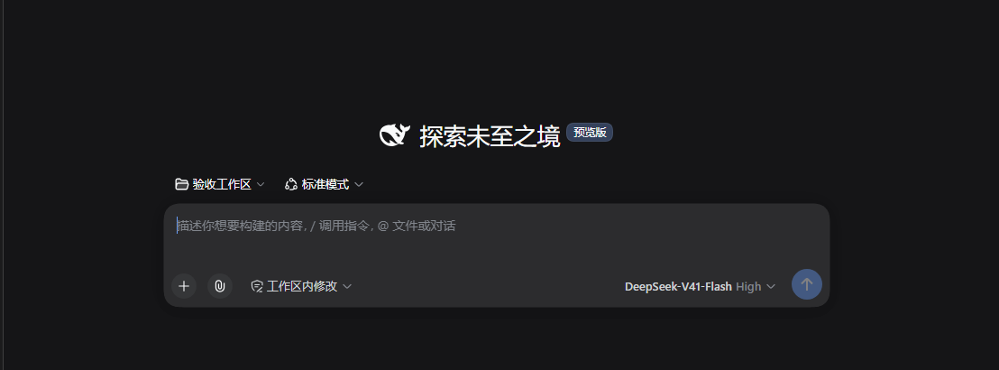
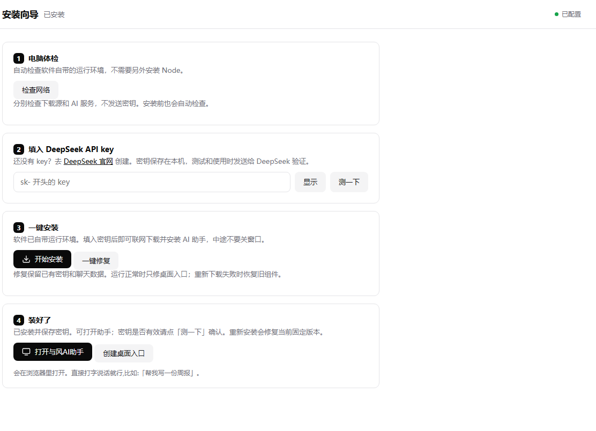
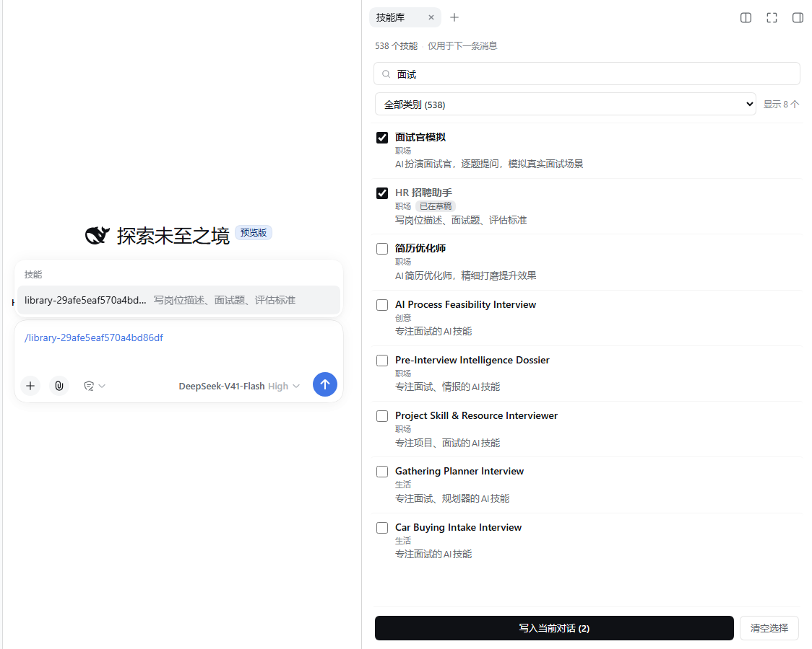
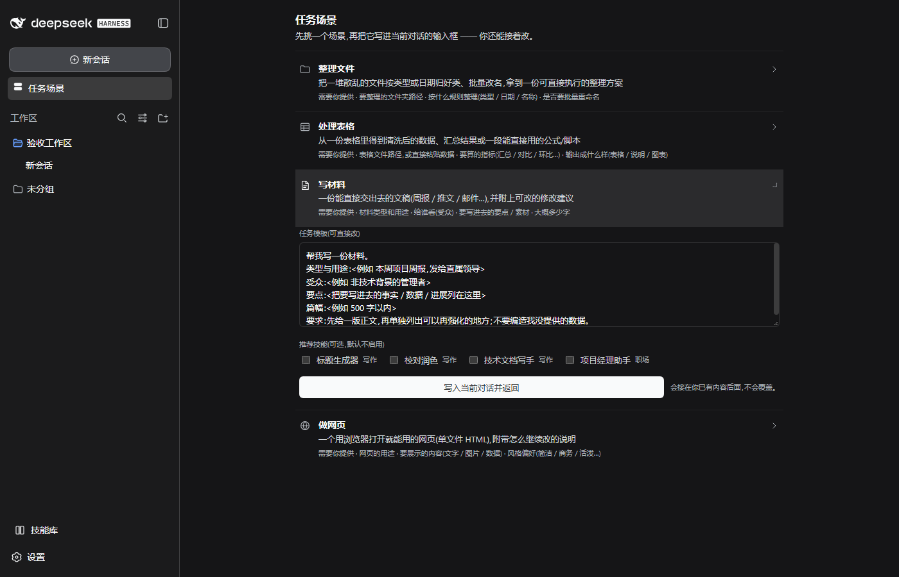

Windows 桌面安装器 · 开源 · v0.5.5
一键装好 AI 助手，
并接上 DeepSeek。
给不写代码的人用的 Windows 安装器。装完你得到一个能直接打字的 AI 助手界面， 另带一个 538 项技能的侧栏技能库——选中就能把技能写进当前对话。

它做了什么
四个入口，从安装到日常使用。
-
01
电脑体检
检查软件自带的运行环境。不需要你另外装 Node，也不需要懂命令行。
-
02
填 API key
key 只存在本机；只有测试和聊天时才发给 DeepSeek 验证。服务端不留、不上传。
-
03
一键安装
联网下载并安装助手内核，装进
%LOCALAPPDATA%\ai-setup\agent，不污染全局 npm。 -
04
打开就能聊
在浏览器里直接开始打字，桌面同时生成「与风AI助手」入口。升级会保留密钥与聊天记录。
三步上手
从双击到开口说话，中间没有坑。
电脑体检
自动检查自带环境，顺带检查下载源与 AI 服务连通性，不发送密钥。
填入 DeepSeek API key
去 DeepSeek 官网创建一个，粘进输入框。可点「测一下」先验证是否有效。
开始安装，然后打开
点「开始安装」联网装好内核，再点「打开与风AI助手」即可打字，「帮我写一份周报」就能开始。
出问题了？安装器上的「一键修复」会重下组件、重建桌面入口，保留已有密钥与聊天记录。

技能库 · 538 项
选中的技能，只对下一条消息生效。
聊天页左侧栏底部「技能库」→ 搜索或按类别浏览 → 勾选 → 「写入当前对话」。
技能会以 /技能名 令牌进到输入框，不会自动发送，你看过再按发送。
- 一次可勾选多条，仅作用于下一条消息，不改变长期设定。
- 538 项技能，覆盖职场、写作、创意、生活等类别。
- 技能内容来自上游开源项目，按各自许可分发（见下方「开源」）。

任务场景
先挑一个场景，再把它写进当前对话。
四个常见场景各带一份可直接改的任务模板。下面是界面示意，点标签切换看看每个场景要你提供什么。
整理文件
把一堆散乱的文件按类型或日期归好类、批量改名，拿到一份可直接执行的整理方案。
需要你提供
要整理的文件夹路径；按什么规则整理（类型／日期／名称）；是否要批量重命名。
把 /我的文件 里的文件按 类型 归类，
同名冲突的加日期前缀，列一份清单给我确认后再动手。
处理表格
从一份表格里得到清洗后的数据、汇总结果或一段能直接用的公式／脚本。
需要你提供
表格路径或直接贴数据；要算的指标（汇总／对比／环比…）；输出成什么样（表格／说明／图表）。
从 sales.xlsx 里按 月份 汇总销售额，
算出同比，并写成一段可直接粘回表格的公式。
写材料
一份能直接交出去的文稿（周报／推文／邮件…），并附上可改的修改建议。
需要你提供
材料类型和用途；给谁看（受众）；要写进去的要点／素材；大概多少字。
帮我写一份材料。 类型与用途：<本周项目周报，发给直属领导> 受众：<非技术背景的管理者> 要点：<把要写进去的事实／数据／进展列在这里> 篇幅：<500 字以内> 要求：先给一版正文，再单独列出可以再强化的地方；不要编造我没提供的数据。
做网页
一个用浏览器打开就能用的网页（单文件 HTML），附带怎么继续改的说明。
需要你提供
网页用途；要展示的内容（文字／图片／数据）；风格偏好（简洁／商务／活泼…）。
做一个单文件 HTML 的活动报名页，
展示 时间、地点、流程，风格简洁，
最后告诉我改标题和配图在哪一行。

开源
装好、接上、加侧栏；真正干活的是上游。
本项目
自有代码用 MIT 许可。负责把内核装好、把 DeepSeek 接上、给聊天页加一个技能库侧栏。
上游署名
- DeepSeek HarnessAI 助手内核／聊天界面 · 由 DeepSeek 提供，本仓库只下载托管、不改写许可
- Node.js随包分发的运行时 · MIT 类许可
- Electron / Express / yauzl各自包内许可
538 项技能内容来自上游开源项目，按各自条款分发（CC0 / MIT），版权归原作者。
有问题或建议，欢迎到 GitHub Issues 反馈交流。
常见问题
先说清楚，免得你装完才发现。
要花钱吗？模型费用怎么算？
软件本身开源、免费下载。你自己提供 DeepSeek API key，模型调用产生的费用由服务商（DeepSeek）按量收取，与本软件无关。它不是「完全离线、免费大模型」——需要联网调 DeepSeek 的接口。
我的 API key 安全吗？
key 只保存在你本机的配置里，只有测试连通性和聊天时才发给 DeepSeek 验证。本软件不收集、不上传你的密钥。
支持哪些系统？
目前只提供 Windows 10/11 · x64 安装包。macOS 与 Linux 暂不支持。
需要先装 Node.js 吗？
不需要。安装包自带运行环境，也自带内核。安装过程不会改动你的全局 npm。
升级或重装会丢聊天记录吗？
不会。装同版本号以上的包升级，聊天记录、密钥、技能库都会保留；「一键修复」同样保留已有数据。
怎么确认下载的安装包没被改过？
对照发布页的 SHA-256 校验值。本页也提供了一份，见下方「校验下载」。
下载
与风AI助手 · Windows 0.5.5
Windows 10/11 · x64 · 约 104 MB（109,329,872 字节）
服务器直链：/downloads/Yufeng-AI-Assistant-Setup-0.5.5.exe（支持断点续传）。若直链不可用，请用 GitHub Releases 备用。
SHA-256
9fd89ebdd7a8db795b1aefcfb9c8bfc0e9840e8d03af21ac4de307dee80c5c4a
校验命令（Windows PowerShell）：Get-FileHash '与风AI助手 Setup 0.5.5.exe' -Algorithm SHA256